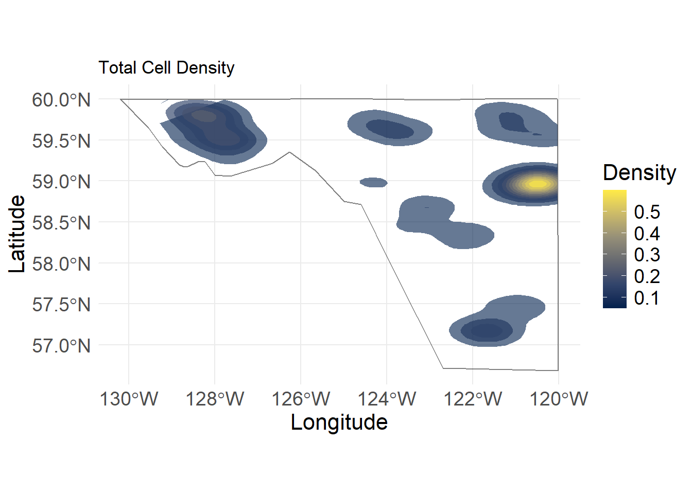
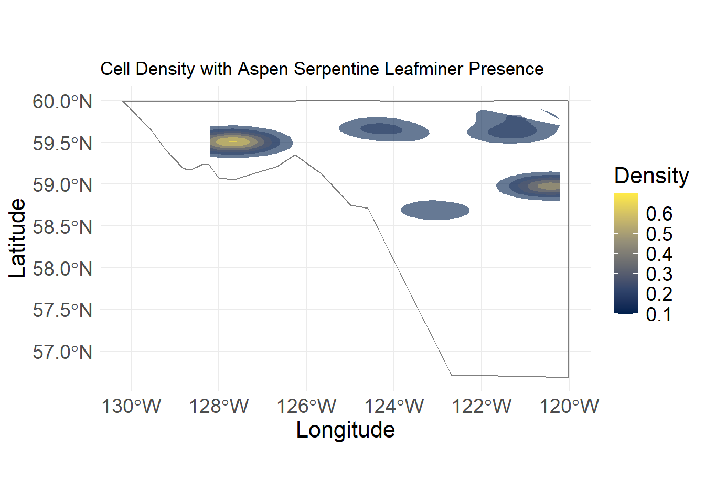
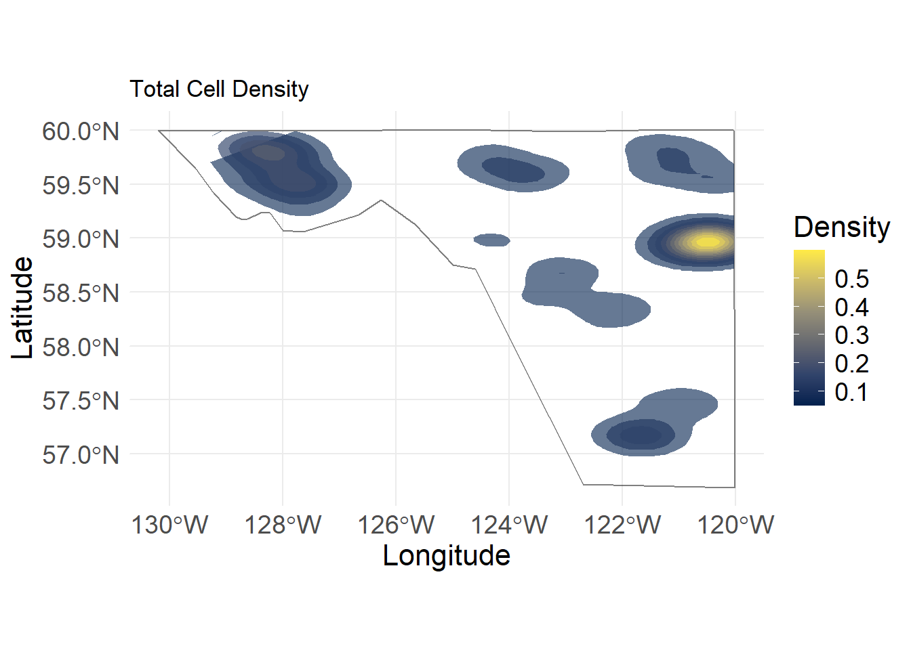
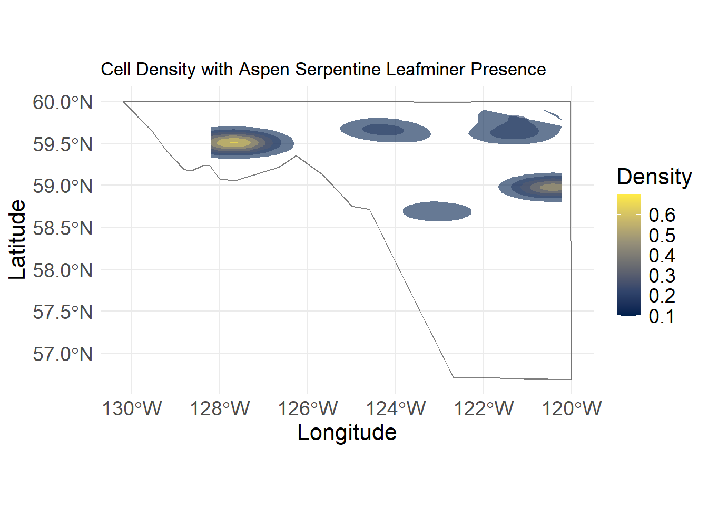

g1Warning: The dot-dot notation (`..level..`) was deprecated in ggplot2 3.4.0.
ℹ Please use `after_stat(level)` instead.
g2
Recent Research
Investigation of the Influence of Aspen Serpentine Leaf Miner (Phyllocnistis populiella) on Fire Severity In Trembling Aspen (Populus tremuloides) Dominant Stands in Northeastern British Columbia
This research is a preliminary investigation into how a known defoliator species, aspen serpentine leafminer (ALM), may impact the ability of trembling aspen stands to serve as a barrier against fire movement. While trembling aspen and ALM are found across British Columbia, the north eastern corner of the province was selected for its homogenous eco-region, cliamte, and topography.
A total of 10326 cells (200mx200m) were identified as locations of fire events in trembling aspen dominant stands. ALM was present in 21% of the final trembling aspen dominant burn cells.
Warning: The dot-dot notation (`..level..`) was deprecated in ggplot2 3.4.0.
ℹ Please use `after_stat(level)` instead.

A random forest regression (ntree = 25) of 13 variables explained 85% of variation in mean differenced normalized burn ratio (dNBR). Aspen serpenine leafminer decreased the total RMSE with 3.5%. The mean dNBR of a cell’s eight nearest neighbors (nn_dnbr) was the most influential variables due to the spatial autocorrelation of fire.
While ALM does not have a dominant impact of burn severity, there is evidence that outbreaks may influence fire behavior in the presence of other climate, vegetation and topographic ranges. Further research into singular fire events, where field observation are possible, may garner clearer insights to the influence of ALM on fire in BC.
Towards more effective climate pedagogies: Exploring the impact of playing a collaborative board game on systems thinking competence and climate emotions in undergraduate education
The goal of this research project is to evaluate the effectiveness of incorporating a cooperative board game on climate action (Daybreak) to foster systems thinking competence. Systems thinking is the understanding of interrelationships and feedback loops in wicked problems such as climate change and the ability to collectively analyze complex systems across different domains (ecology, technology, economy, social policy) and different scales (Wiek et al., 2011). Other learning outcomes such as reduced eco-anxiety and other negative emotions will also be evaluated.
My contribution in this research has been creating the experimental materials, facilitng a 2-day board game workshop, analyzing quantative and qualitative results and writing for a peer reviewed submision. This research is done in under the supervision of Principal Investigator, Dr. Fernanda Tomaselli (University of British Columbia) and Co-Investigator, Dr. Abhirami Senthilkumaran (University of British Columbia), and is partially funded by the CampusBC research fellows program.
Halifax Residential Air Quality: Public Perceptions and PM2.5 Concentrations
Under the supervision of Dr.Daniel Rainham (Dalhousie University), this honours thesis investigated temporal variation in airborne particulate matter (PM2.5) in Halifax’s North End. This thesis was purposed following concerns from local residents regarding local air pollution and it’s impacts on quality of life.
Residents of Halifax’s North End have raised concerns over air quality in their neighbourhood. Exposure to elevated levels of airborne particulate matter pose serious risks to human health and increases strain on local healthcare systems. This study sought to quantify local concentrations of PM2.5 and compare them to Canadian Ambient Air Quality Standards (CAAQS). Additionally, it aimed to understand public perceptions of air quality and sources of pollution within their neighborhood. PM2.5 concentrations were collected remotely from the 2600 block of Agricola Street from November 2022 and November 2023. A total of 276 usable days were recorded. The observed 24-hour 98th percentile PM2.5 average is 50.1 μg/m3 and the annual average is 12.6 μg/m3. Averages exceeded the highest CAAQS threshold of both 24-hour and annual averages. Daily trends showed that the highest concentrations occurred between 8 am and 6 pm on weekdays and showed no variation from the downtown control site on weekends. The highest PM2.5 concentrations were recorded in the presence of northwesterly winds. A local butcher shop and meat smoker to the northwest of the study site, was identified as a likely source of the local elevated air pollution A self-selecting, online survey was circulated by mail flyer and email. People who live or work within a 200 m radius of the air quality sensor were eligible to participate. Participants were asked to rate their perception of local air quality trends, level of concern, and perceived sources of pollution. Based on census population density, it is estimated that 900 respondents lived within the study area. Survey results were based upon 61 usable responses. Respondents to the survey confirmed that they perceived the nearby meat smoking operation to be one of the top three sources of air pollution within their community. A Posteriori coding of open-ended questions yielded numerous sentiments of frustration and reduced quality of life due to local air pollution. However, most respondents indicated that they perceived air quality to be at least acceptable. Regardless of perception, long-term exposure to elevated PM2.5 levels pose health risks to the public in the immediate vicinity; especially seniors, children, and those with pre-existing medical conditions.
The final copy of this thesis can be found in the Dalhousie University thesis repository.